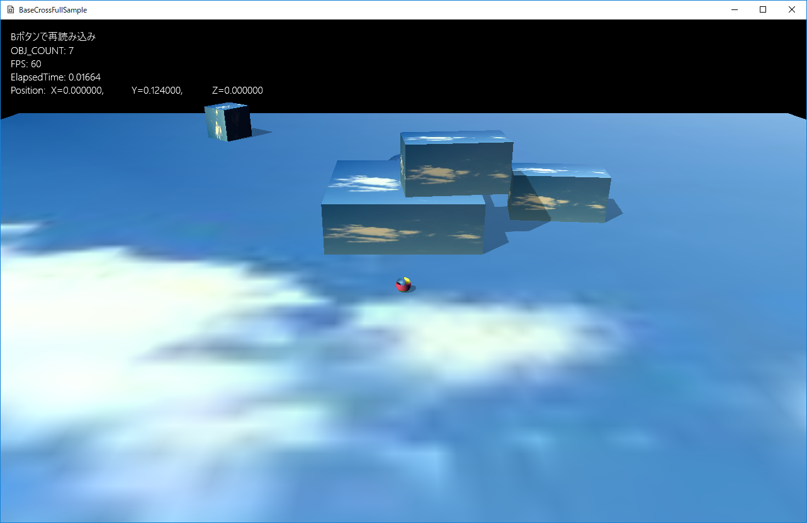

図1102a
このサンプルもXBoxコントローラが必須になります。
//初期化
void Player::OnCreate() {
//初期位置などの設定
auto PtrTrans = GetComponent<Transform>();
PtrTrans->SetScale(Vec3(m_Scale)); //直径25センチの球体
PtrTrans->SetRotation(0.0f, 0.0f, 0.0f);
auto bkCamera = App::GetApp()->GetScene<Scene>()->GetBackupCamera();
Vec3 FirstPos;
if (!bkCamera) {
FirstPos = Vec3(0, m_Scale * 0.5f, 0);
}
else {
FirstPos = App::GetApp()->GetScene<Scene>()->GetBackupPlayerPos();
}
PtrTrans->SetPosition(FirstPos);
//WorldMatrixをもとにRigidbodySphereのパラメータを作成
PsSphereParam param(PtrTrans->GetWorldMatrix(),1.0f,false, PsMotionType::MotionTypeActive);
//RigidbodySphereコンポーネントを追加
auto PsPtr = AddComponent<RigidbodySphere>(param);
//自動的にTransformを設定するフラグは無し
PsPtr->SetAutoTransform(false);
//文字列をつける
auto PtrString = AddComponent<StringSprite>();
PtrString->SetText(L"");
PtrString->SetTextRect(Rect2D<float>(16.0f, 16.0f, 640.0f, 480.0f));
//影をつける（シャドウマップを描画する）
auto ShadowPtr = AddComponent<Shadowmap>();
//影の形（メッシュ）を設定
ShadowPtr->SetMeshResource(L"DEFAULT_SPHERE");
//描画コンポーネントの設定
auto PtrDraw = AddComponent<BcPNTStaticDraw>();
//描画するメッシュを設定
PtrDraw->SetMeshResource(L"DEFAULT_SPHERE");
//描画するテクスチャを設定
PtrDraw->SetTextureResource(L"TRACE_TX");
//透明処理
SetAlphaActive(true);
//カメラを得る
auto PtrCamera = dynamic_pointer_cast<MyCamera>(OnGetDrawCamera());
if (PtrCamera) {
//MyCameraである
//MyCameraに注目するオブジェクト（プレイヤー）の設定
PtrCamera->SetTargetObject(GetThis<GameObject>());
PtrCamera->SetTargetToAt(Vec3(0, 0.25f, 0));
}
}
struct PsSphereParam : public PsParam {
float m_Radius;
PsSphereParam() :
m_Radius(1.0f)
{}
PsSphereParam(const bsm::Mat4x4& mat,
float mass, bool UseSleep, PsMotionType mtype){
//basecrossのスケーリングは直径基準なので、半径基準にする
m_Radius = mat.scaleInMatrix().y * 0.5f;
m_Mass = mass;
//慣性テンソルの計算
m_Inertia = BasePhysics::CalcInertiaSphere(m_Radius, m_Mass);
m_UseSleep = UseSleep;
m_MotionType = mtype;
m_Quat = mat.quatInMatrix();
m_Pos = mat.transInMatrix();
}
};
struct PsParam {
PsMotionType m_MotionType;
bsm::Quat m_Quat;
bsm::Vec3 m_Pos;
bsm::Vec3 m_LinearVelocity;
bsm::Vec3 m_AngularVelocity;
bool m_UseSleep;
float m_Mass;
//慣性テンソル
bsm::Mat3x3 m_Inertia;
float m_Restitution;
float m_Friction;
//衝突判定制御
uint32_t m_ContactFilterSelf;
uint32_t m_ContactFilterTarget;
//オフセット値
bsm::Quat m_OffsetOrientation;
bsm::Vec3 m_OffsetPosition;
PsParam() :
m_Quat(),
m_Pos(0),
m_LinearVelocity(0),
m_AngularVelocity(0),
m_UseSleep(true),
m_Mass(0.0f),
m_Inertia(),
m_Restitution(0.2f),
m_Friction(0.6f),
m_ContactFilterSelf(0xffffffff),
m_ContactFilterTarget(0xffffffff),
m_OffsetOrientation(),
m_OffsetPosition(0.0f)
{
m_Quat.identity();
m_OffsetOrientation.identity();
}
};
PsSphereParam param(PtrTrans->GetWorldMatrix(),1.0f,false, PsMotionType::MotionTypeActive);
//自動的にTransformを設定するフラグは無し
PsPtr->SetAutoTransform(false);
void Player::OnUpdate() {
//コントローラチェックして入力があればコマンド呼び出し
m_InputHandler.PushHandle(GetThis<Player>());
auto Vec = GetMoveVector();
auto PtrPs = GetComponent<RigidbodySphere>();
auto Velo = PtrPs->GetLinearVelocity();
//xとzの速度を修正
Velo.x = Vec.x * 5.0f;
Velo.z = Vec.z * 5.0f;
//速度を設定
PtrPs->SetLinearVelocity(Velo);
}
void Player::OnUpdate2() {
//RigidbodySphereからTransformへのパラメータの設定
//自動的に設定はされない設定になっているので自分で行う
auto PtrPs = GetComponent<RigidbodySphere>();
auto Ptr = GetComponent<Transform>();
//位置情報はそのまま設定
Ptr->SetPosition(PtrPs->GetPosition());
//回転の計算
Vec3 Angle = GetMoveVector();
if (Angle.length() > 0.0f) {
//補間処理を行う回転。
RotToHead(Angle, 0.1f);
}
//文字列の表示
DrawStrings();
}
void Player::RotToHead(const Vec3& Velocity, float LerpFact) {
if (LerpFact <= 0.0f) {
//補間係数が0以下なら何もしない
return;
}
auto PtrTransform = GetComponent<Transform>();
//回転の更新
if (Velocity.length() > 0.0f) {
bsm::Vec3 Temp = Velocity;
Temp.normalize();
float ToAngle = atan2(Temp.x, Temp.z);
Quat Qt;
Qt.rotationRollPitchYawFromVector(bsm::Vec3(0, ToAngle, 0));
Qt.normalize();
//現在の回転を取得
Quat NowQt = PtrTransform->GetQuaternion();
//現在と目標を補間
if (LerpFact >= 1.0f) {
NowQt = Qt;
}
else {
//クオータニオンの補間処理
NowQt = XMQuaternionSlerp(NowQt, Qt, LerpFact);
}
PtrTransform->SetQuaternion(NowQt);
}
}
//自動的にTransformを設定するフラグは無し
PsPtr->SetAutoTransform(false);
void ActivePsBox::OnCreate() {
auto PtrTrans = GetComponent<Transform>();
PtrTrans->SetScale(m_Scale);
PtrTrans->SetQuaternion(m_Qt);
PtrTrans->SetPosition(m_Position);
//影をつける
auto ShadowPtr = AddComponent<Shadowmap>();
ShadowPtr->SetMeshResource(L"DEFAULT_CUBE");
auto PtrDraw = AddComponent<BcPNTStaticDraw>();
PtrDraw->SetFogEnabled(true);
PtrDraw->SetMeshResource(L"DEFAULT_CUBE");
PtrDraw->SetOwnShadowActive(true);
PtrDraw->SetTextureResource(L"SKY_TX");
//物理計算ボックス
PsBoxParam param(PtrTrans->GetWorldMatrix(), 1.0f, true, PsMotionType::MotionTypeActive);
auto PsPtr = AddComponent<RigidbodyBox>(param);
void FixedPsBox::OnCreate() {
auto PtrTrans = GetComponent<Transform>();
PtrTrans->SetScale(m_Scale);
PtrTrans->SetQuaternion(m_Qt);
PtrTrans->SetPosition(m_Position);
//影をつける
auto ShadowPtr = AddComponent<Shadowmap>();
ShadowPtr->SetMeshResource(L"DEFAULT_CUBE");
auto PtrDraw = AddComponent<BcPNTStaticDraw>();
PtrDraw->SetFogEnabled(true);
PtrDraw->SetMeshResource(L"DEFAULT_CUBE");
PtrDraw->SetOwnShadowActive(true);
PtrDraw->SetTextureResource(L"SKY_TX");
//物理計算ボックス
PsBoxParam param(PtrTrans->GetWorldMatrix(), 0.0f, true, PsMotionType::MotionTypeFixed);
auto PsPtr = AddComponent<RigidbodyBox>(param);
}